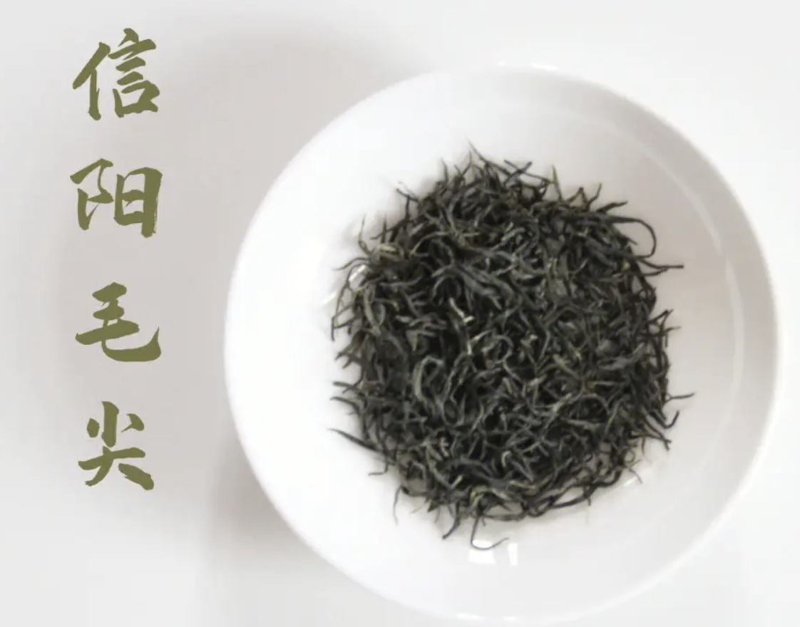
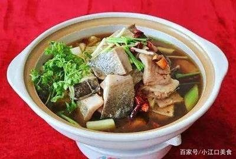

|  |  | |
信阳毛尖（Xinyang Maojian Tea）是一种著名的中国绿茶品种，具有多种等级和存储方法。其产地主要集中在河南省信阳市的浉河区、平桥区和罗山县，具有独特的品质特点。茶文化是中国传统文化的重要组成部分，包括茶道、茶德、茶精神等多个方面，同时也具有历史性和时代性。 信阳是物产丰富的资源宝地。信阳是中国毛尖之都，信阳毛尖是中国十大名茶之一，2023年信阳毛尖品牌价值达79.84亿元，连续14年位居全国前三位。 南湾鱼盛产于有"中原第一湖"美誉的信阳南湾湖，独特的气候条件和优质的水资源孕育出的南湾鱼肉质细嫩、鲜美爽口，年产量达180万公斤，是地道的无公害绿色食品。
点击此处返回主页面 |
||